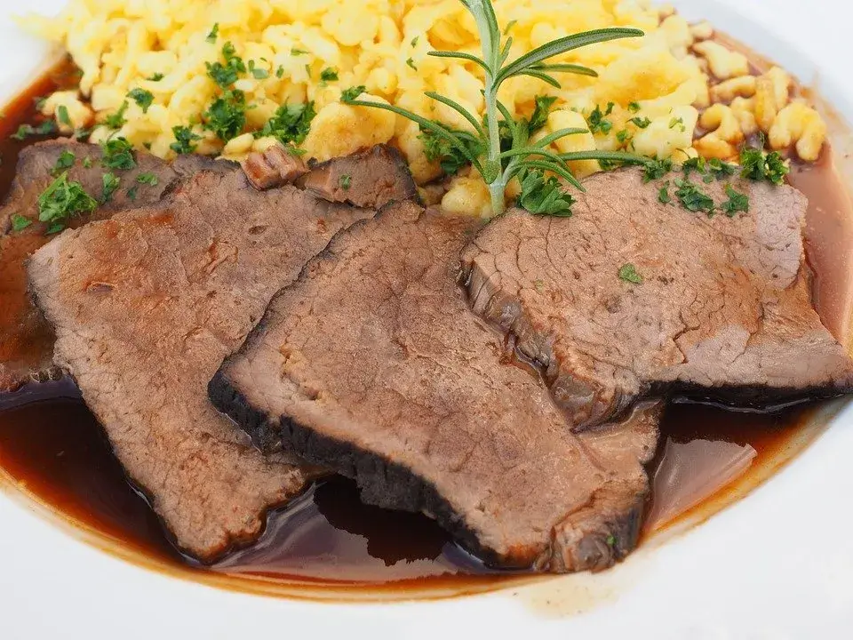

El Rheinischer Sauerbraten es un asado tradicional alemán de carne muy marinada. Se considera un plato nacional de Alemania y se sirve con frecuencia en restaurantes de estilo alemán. Se puede preparar a partir de una variedad de carnes, la mayoría de las veces de ternera,pero también de venado, cordero, cerdo y caballo. Es un asado procedente de un adobo de carne (el "Beize" - marinado) con vinagre, agua, caldo de verduras y especias(como por ejemplo bayas de enebro, hojas de laurel, clavos, bayas de pimienta, canela, semillas de mostaza etc.) dejado durante varios días.
El marinado resultante va enterneciendo la carne poco a poco, y es por esta razón por la que no se necesita una carne especial de vaca,
basta con una más barata, ya que el resultado tras el marinado tiene la misma textura tierna y jugosa.
Una cena Sauerbraten casi siempre va acompañada de una abundante salsa agridulce resultante de su asado y, con mayor frecuencia, se sirve con tortitas de patata ( Kartoffelpuffer), albóndigas de patata ( Kartoffelklöße) o pasta Spätzle.Los ingredientes utilizados en la marinada y los acompañamientos que se sirven con salchicha varían según la región. Las variantes regionales del plato incluyen las de Franconia , Turingia , Renania , Sarre , Silesia y Suabia.

Ingredientes
1 kg de carne de res o buey
500 ml de vino tinto
100 ml de vinagre blanco
2 cucharadas de miel
2 cebollas
4 zanahorias
Perejil
½ apio
3 hojas de laurel
6 granos de pimienta
3 clavos de olor
Sal
pimienta
Aceite
3 cucharadas de pasta de tomate
Preparacion
El primer paso es marinar la carne. Esto debe hacerse unos 2-3 días antes de preparar el Sauerbraten. Para hacer esto, primero retire el
exceso de grasa de la carne y luego lávela brevemente y séquela. En una asadera, mezcle el vino tinto con el vinagre y la miel.
Pelar las cebollas, las zanahorias, el perejil y el apio y cortar todo en trozos grandes. Agregue las verduras al vino tinto
y vinagre junto con todas las especias. Luego revuelva varias veces y agregue la carne. Cubra el recipiente con film transparente y colóquelo
en la heladera durante 2-3 días.
Saca la asadera de la heladera el día que la prepares. Retirar la carne del caldo, escurrir bien y luego sazonar con sal y pimienta. Verter el
caldo en un bol. Ahora calienta un poco de aceite en una sartén grande. Dore el Sauerbraten por todos lados. Mientras tanto el precalienta el
a 180 grados.
Saque la carne de la sartén. Separe las verduras del caldo con un colador, déjelas escurrir y luego fríalas en una asadera caliente. Agregue la
pasta de tomate, ase y desglase con un trago generoso del líquido. Vuelva a colocar el sauerbraten y coloque la tapa en la asadera. Ahora ponlo
en el horno durante unas 2 horas. Mientras tanto, dar varias vueltas a la carne y seguir añadiendo un poco de caldo.
Cuando la carne esté lista, saquela del horno y retírelo de la asadera. Dejar reposar brevemente sobre una tabla de madera. Al mismo
tiempo, cuele el líquido en una cacerola pequeña. Hervir brevemente y preparar una salsa con espesante de salsa o un poco de maicena
disuelta en agua.
Por último, corta el asado en rodajas y sírvelo con la guarnición casera y la salsa. ¡Disfrute de su comida!